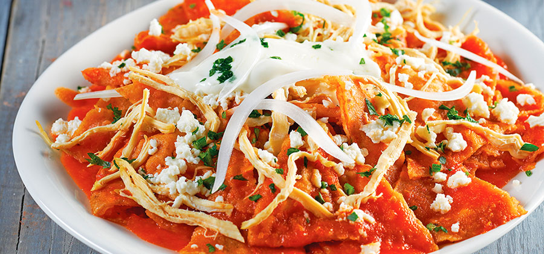

Chilaquiles

Description
It is a traditional Mexican breakfast dish consisting of corn tortillas cut into quarters and lightly fried.
Ingredients
- 8 fresh tomatillos, husks removed
- 1 white onion, coarsely chopped
- 1 poblano pepper, peeled and seeded
- 1 jalapeno pepper, seeded
- ¾ cup chopped cilantro
- 4 cloves garlic
- 2 leaves fresh mint
- salt to taste
- 3 cups shredded cooked chicken
- ¼ cup vegetable oil
- 12 (6 inch) white corn tortillas, cut into 3 strips
- ¾ cup shredded pepperjack cheese
- ¾ cup shredded Monterey Jack cheese
Steps
- Preheat oven to 375 degrees F (190 degrees C).
- Blend tomatillos, onion, poblano pepper, jalapeno pepper, cilantro, garlic, mint, and salt in a blender until smooth. Transfer mixture to a saucepan and bring to a gentle boil. Reduce heat to medium-low and simmer until thickened, stirring often, about 10 minutes. Add chicken to tomatillo sauce and continue to simmer until chicken is heated through, about 5 minutes more.
- Heat vegetable oil in a large skillet over medium heat. Fry tortilla strips in batches until crisp and lightly browned, 5 to 7 minutes. Drain on a paper towel-lined plate.
- Layer about half the fried tortillas in a 2-quart baking dish; spread half the tomatillo sauce over tortillas. Mix pepperjack cheese and Monterey Jack cheese in a bowl; sprinkle half over tomatillo sauce. Repeat layers.
- Bake in preheated oven until cheese is golden and bubbly, 30 to 35 minutes. Allow to cool 5 minutes before serving.